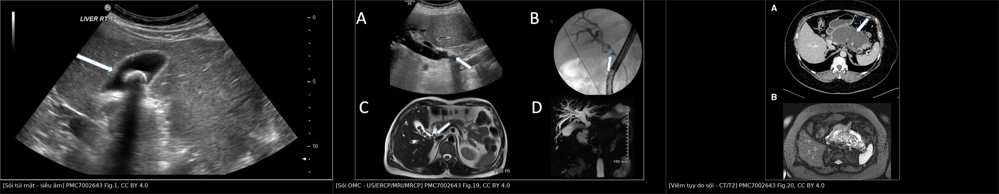
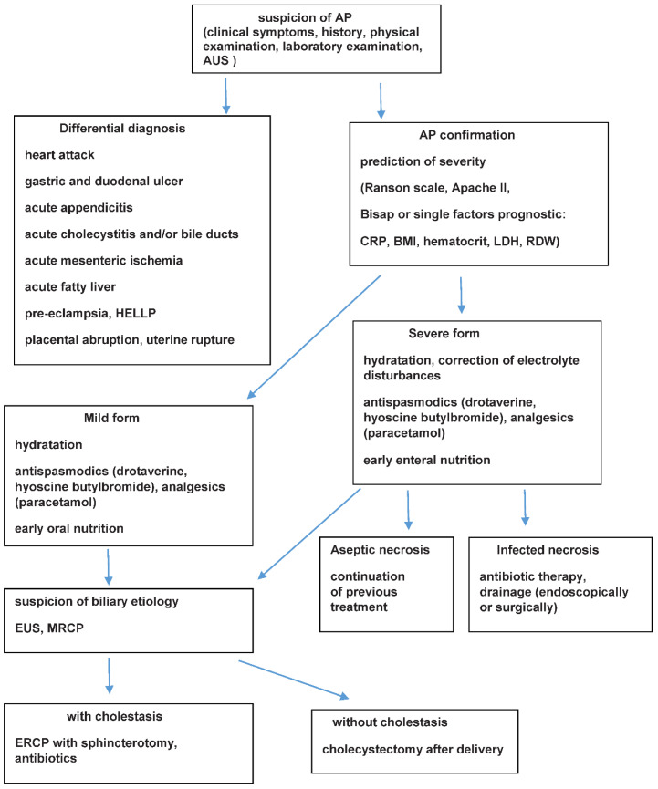
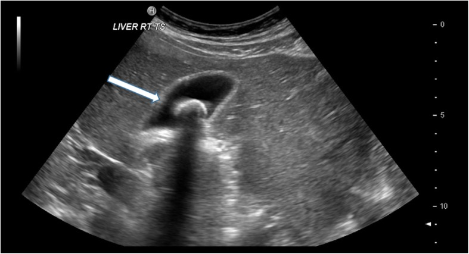
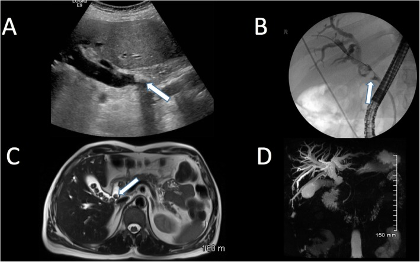
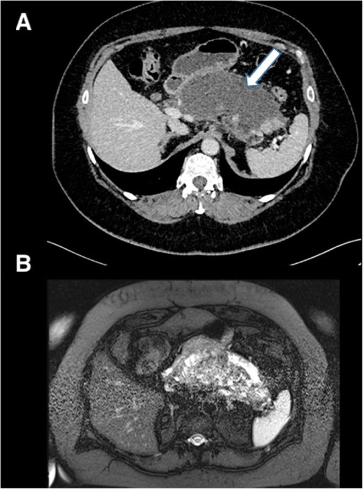

1938 — Viêm tụy cấp do sỏi ở thai phụ: khi nào ERCP, khi nào cắt túi mật, và ngưỡng lipase để không mổ oan / Acute biliary pancreatitis in pregnancy: ERCP, cholecystectomy, and the lipase threshold
Tags: pattern:viem pattern:tac-nghen pattern:soi pattern:phu-tuy vung:tuy vung:duong-mat vung:thai-nhi protocol:sieu-am-bung protocol:MRCP protocol:ERCP score:Atlanta-2012
Mức chắc chắn (certainty): tổng hợp y văn (literature synthesis) — ghép tổng quan 2024 (PMC11012882: định nghĩa 2/3 tiêu chuẩn, vai trò siêu âm/MRI/EUS, dinh dưỡng, cắt túi mật), tổng quan 2022 (PMC9737239: dịch tễ, tử vong mẹ 3,3%, thai 11,6–18,7%, siêu âm Se 73%/Sp 91%, thuật toán xử trí), phân tích gộp ERCP ở thai (PMC6941455: 1.307 thai phụ/27 nghiên cứu, liều xạ, biến cố), nghiên cứu 4.034 ca Trung Quốc (trích trong PMC11012882: tử vong mẹ 2,8%) và tổng quan same-admission vs delayed cholecystectomy (PMC6263067: tái phát tới 33%, biến cố chờ mổ 25,39%). Số nào nguồn không nêu ghi "chưa rõ".
Câu chốt: ba quyết định, ba ngưỡng. (1) Chẩn đoán: đau thượng vị lan lưng + lipase ≥ 3 × giới hạn trên (không cần CT). (2) ERCP chỉ khi có viêm đường mật hoặc tắc ống mật chủ kéo dài — không phải cứ "viêm tụy do sỏi"; ERCP ở thai nhiều ca nhất thế giới (1.307 ca) có biến cố thai 5,2–6,2%, và liều xạ trung bình 3,1 mSv — vượt ngưỡng khuyến cáo < 1 mSv cho quý I nếu không che chắn/không dùng kỹ thuật không xạ. (3) Cắt túi mật cùng đợt cho thể nhẹ: bảo tồn có tái phát tới 33%, chờ mổ có 25,39% biến cố mật — nên "chờ sau sinh" chỉ dành cho thể nặng hoặc quý III sát sinh.
1. Tổng quan bệnh học – cơ chế hình ảnh
1.1 Vì sao sỏi mật gây viêm tụy và vì sao thai kỳ làm tăng nguy cơ (TẠI SAO)
- Cơ chế "tắc tạm thời – hồi phục": sỏi nhỏ từ túi mật xuống ống mật chủ, kẹt ở bóng Vater/ống tụy chính → tăng áp lực ống tụy → trypsinogen thành trypsin ngay trong nhu mô, hoạt hóa dây chuyền (elastase, phospholipase A2) → tự tiêu mô mỡ và mạch máu. Sỏi thường trôi đi, nên hình ảnh có thể không thấy sỏi tại thời điểm chụp — đây là lý do "siêu âm âm tính" không loại trừ nguyên nhân mật.
- Vì sao có thai làm tăng sỏi: estrogen làm tăng bài tiết cholesterol vào mật và progesterone làm giảm co bóp túi mật → ứ mật, tinh thể cholesterol. Trong 6 tháng cuối thai, bùn mật mới 31% và sỏi mới 2%; sau sinh 1 năm, bùn tự hết 61% còn sỏi chỉ 28% (PMC11012882).
- Vì sao đau lan lưng: tụy nằm sau phúc mạc, kích thích đám rối tạng (celiac plexus) → đau thượng vị xuyên ra lưng; khác với đau túi mật hạ sườn phải lan vai phải. Đây là mốc phân biệt lâm sàng quan trọng nhất.
- Vì sao thể nặng nguy hiểm cho thai: SIRS mẹ → giảm tưới máu tử cung – bánh nhau, sốt và toan → chuyển dạ non, thai lưu. Khoảng 1/3 thai phụ tiến triển thể nặng (PMC9737239).
1.2 Vì sao hình ảnh trông như vậy (vật lý từng phương thức)
- Siêu âm bụng: sỏi mật tăng hồi âm mạnh + bóng lưng sạch (posterior acoustic shadowing) vì sỏi cản gần như toàn bộ sóng; bùn mật cũng tăng hồi âm nhưng không có bóng lưng và lắng theo trọng lực. Với viêm tụy cấp, tụy thường phù to, giảm hồi âm do dịch phù trong mô kẽ; đầu tụy bị che bởi hơi tá tràng nên siêu âm bỏ sót tụy ở 20–30% (chưa rõ con số chính xác cho thai — cần tra). Giá trị lớn nhất của siêu âm ở thai là tìm sỏi túi mật và giãn đường mật, không phải đánh giá nhu mô tụy.
- MRI/MRCP: mật và dịch tụy sáng trên T2 (nước tự do), còn sỏi là "lỗ khuyết" tối trong lòng ống sáng. MRCP không cần gadolinium, nên tránh được lo ngại về thuốc cản từ; độ chính xác cho sỏi ống mật chủ > 90% (PMC9737239).
- CT: sỏi cholesterol thường đồng/tăng nhẹ tỉ trọng, khó thấy hơn sỏi canxi; CT mạnh nhất ở biến chứng: hoại tử tụy không ngấm thuốc, dịch quanh tụy, khí trong ổ hoại tử nhiễm khuẩn. Nhưng CT dùng liều xạ, nên trong thai không phải lựa chọn đầu tay.
- Nội soi siêu âm (EUS): đầu dò sát thành dạ dày – tá tràng, không xạ, độ phân giải cao cho sỏi ống mật chủ nhỏ; an toàn mọi tam cá nguyệt nhưng cần gây mê/tiền mê có kiểm soát (PMC11012882).
1.3 Ngưỡng định lượng nằm lòng
| Đại lượng | Ngưỡng / con số | Ý nghĩa | Nguồn |
|---|---|---|---|
| Tần suất viêm tụy cấp ở thai | 1/1.000 – 1/5.000 thai kỳ | Bệnh hiếm nhưng nặng | PMC9737239 |
| Tử vong mẹ | 3,3% (số cũ); 2,8% trong 4.034 ca Trung Quốc | Đã giảm mạnh so với 37% trước đây | PMC9737239, PMC11012882 |
| Tử vong thai | 11,6–18,7% | Lý do phải theo dõi thai liên tục | PMC9737239 |
| Tử vong mẹ theo tam cá nguyệt | 12,7% (quý I), 7,9% (quý II), 6,4% (quý III) | Quý I nặng nhất trong dữ liệu gộp | PMC11012882 |
| Nguyên nhân do sỏi | 14,29–96,3% giữa các nghiên cứu | Nguyên nhân hàng đầu | PMC9737239 |
| Thể nặng | ≈ 1/3 thai phụ | Không được xem là bệnh nhẹ | PMC9737239 |
| Lipase/amylase | ≥ 3 × giới hạn trên | Một trong 3 tiêu chuẩn Atlanta | PMC11012882 |
| Amylase về bình thường | 48–72 giờ sau khởi phát | Xét nghiệm muộn dễ âm tính giả | PMC9737239 |
| Siêu âm cho nguyên nhân mật | Se 73%, Sp 91% | Tốt để xác nhận, không đủ để loại trừ sỏi OMC | PMC9737239 |
| MRCP cho sỏi OMC | độ chính xác > 90% | Thay thế CT trong thai | PMC9737239 |
| Tái phát khi không cắt túi mật | tới 33% | Cơ sở của cắt túi mật cùng đợt | PMC6263067 |
| Biến cố mật khi chờ mổ | 25,39% (biliary colic 13,56%, viêm tụy tái phát 8,5%) | Chờ mổ không miễn phí | PMC6263067 |
| ERCP ở thai | 1.307 ca/27 nghiên cứu, biến cố chung 15,9%, biến cố thai 5,2–6,2% | Ngưỡng lợi ích/nguy cơ | PMC6941455 |
| Liều xạ ERCP | 3,2 ± 1,8 phút chiếu, 3,1 ± 1,64 mSv | Khuyến cáo < 1 mSv quý I, < 5 mSv cả thai kỳ | PMC6941455 |
| Phẫu thuật cắt túi mật ở thai | biến chứng mẹ ≈ 4%, thai 5,8% | Thấp hơn nguy cơ bảo tồn | PMC10768355 |
2. Mẫu hình + chẩn đoán phân biệt theo vị trí (gamut)
Mẫu hình chính: thai phụ đau thượng vị dữ dội lan ra lưng + nôn + amyase/lipase tăng → nghĩ viêm tụy cấp. Gamut dưới đây xếp theo vị trí giải phẫu của ổ bệnh, vì mỗi vị trí có hình ảnh và xử trí khác nhau.
- Tụy – ống tụy: viêm tụy do sỏi (bài này), viêm tụy do tăng triglyceride (thai kỳ là yếu tố làm nặng), viêm tụy do thuốc, tăng canxi do cường tuyến cận giáp (bài 1673/1680 liên quan chuyển hóa).
- Túi mật: viêm túi mật cấp (bài 1925) — đau hạ sườn phải, Murphy, thành túi mật > 3 mm.
- Đường mật: viêm đường mật cấp (bài 1929) — sốt, vàng da, giãn ống mật chủ; đây là chỉ định ERCP cấp.
- Dạ dày – tá tràng: loét thủng, viêm dạ dày nặng — khí ngoài lòng, dịch tự do, đau tăng khi ấn.
- Gan: gan nhiễm mỡ cấp thai kỳ (AFLP) và HELLP — men gan tăng, giảm tiểu cầu, hạ đường huyết, tổn thương gan lan tỏa không có sỏi.
- Mạch mạc treo: thiếu máu mạc treo (bài 1908) — đau không tương xứng, khí trong thành ruột muộn.
- Tử cung – phần phụ: nhau bong non, xoắn buồng trứng, vỡ tử cung — đau kèm bất thường tim thai, ra máu.
- Niệu quản: sỏi niệu quản (bài 1818) — đau hông lưng lan xuống, tiểu máu, ứ nước.
3. Bảng so sánh phân biệt (ma trận đối chiếu)
| Thực thể (entity) | Hình ảnh điển hình | Chốt vào (rule-in) | Chốt loại (rule-out) | Gợi ý xác nhận |
|---|---|---|---|---|
| Viêm tụy cấp do sỏi | Tụy phù, dịch quanh tụy; sỏi túi mật có bóng lưng; MRCP lỗ khuyết ở OMC | Đau thượng vị lan lưng + lipase ≥ 3 × ULN + sỏi/bùn mật | Lipase bình thường, không sỏi, không đau điển hình → ít nghĩ | Lipase lặp; siêu âm; MRCP khi nghi tắc |
| Viêm túi mật cấp | Thành túi mật > 3 mm, dịch quanh túi, sỏi cổ túi, Murphy siêu âm | Đau hạ sườn phải + Murphy + thành dày + sỏi | Thành < 3 mm, không sỏi, đau lan lưng → loại | Siêu âm (bài 1925); không cần CT |
| Viêm đường mật cấp | Giãn ống mật chủ, sỏi OMC, dày thành ống mật | Sốt + vàng da + đau hạ sườn phải (Charcot) + giãn đường mật | Không giãn mật, không vàng da, lipase trội → nghĩ tụy | MRCP/EUS; ERCP cấp (bài 1929) |
| AFLP / HELLP | Gan giảm tỉ trọng lan tỏa trên CT (nếu chụp), không sỏi | Men gan tăng + giảm tiểu cầu + hạ đường huyết + tan máu | Tiểu cầu bình thường, không tan máu → loại | Xét nghiệm máu là chính; hình ảnh chỉ hỗ trợ |
| Loét thủng | Khí ngoài lòng, dịch tự do, thành dạ dày gián đoạn | Đau như dao đâm + đề kháng thành bụng + khí tự do | Không khí tự do, lipase tăng trội → loại | X-quang bụng đứng; CT có che chắn |
| Thiếu máu mạc treo | Thành ruột dày, khí trong thành, mạch tắc trên CTA | Đau không tương xứng + toan lactic + mạch máu tắc | Lipase cao, sỏi rõ, đau giảm sau giảm đau → loại | CTA (hạn chế xạ); theo dõi sát |
| Sỏi niệu quản | Ứ nước, sỏi niệu quản, giãn đài bể thận | Đau hông lưng lan xuống + tiểu máu + ứ nước | Không ứ nước, không tiểu máu, lipase cao → loại | Siêu âm thận; MRU nếu cần |

Hình 1 — Ảnh ghép letterbox: (A) sỏi tăng hồi âm có bóng lưng; (B) sỏi OMC: siêu âm, ERCP (khuyết thuốc), MRI T2 và MRCP MIP; (C) viêm tụy do sỏi: CT hoại tử – dịch quanh tụy và T2 fat-sat tương ứng. Nguồn: PMC7002643 Figs. 1, 19, 20, CC BY 4.0.4. Protocol chụp + hệ phân độ/điểm chuẩn hóa
Chẩn đoán (Atlanta 2012): cần 2 trong 3 — đau điển hình, lipase/amylase ≥ 3 × ULN, hình ảnh phù hợp. Không cần CT để chẩn đoán.
Chiến lược hình ảnh theo bước:
| Bước | Phương thức | Khi nào | Ghi chú an toàn |
|---|---|---|---|
| 1 | Siêu âm bụng | Mọi ca nghi ngờ | Không xạ; tìm sỏi/bùn, giãn đường mật, dịch; hạn chế ở quý III do tử cung che |
| 2 | MRCP không cản từ | Nghi sỏi OMC, vàng da, giãn đường mật, siêu âm không kết luận | Không dùng gadolinium; tránh quý I nếu có thể, nhưng làm khi cần |
| 3 | EUS | Nghi sỏi OMC nhỏ, định làm ERCP | Không xạ; cần gây mê có kiểm soát |
| 4 | CT bụng có cản quang | Nghi hoại tử, biến chứng, nhiễm khuẩn ổ hoại tử, chấn thương | Hạn chế tối đa; che chắn, trường chiếu hẹp |
| 5 | ERCP | Viêm đường mật, tắc OMC kéo dài, thất bại điều trị nội | Che chắn; ưu tiên kỹ thuật không xạ; stent nhựa nếu chưa mổ được |
Phân độ và xử trí:
flowchart TD
A["Thai phụ đau thượng vị lan lưng + nôn"] --> B["Lipase ≥ 3 × ULN + siêu âm bụng"]
B --> C{"Có viêm đường mật hoặc tắc OMC kéo dài?"}
C -->|"Có"| D["ERCP có che chắn hoặc kỹ thuật không xạ, ưu tiên < 24 giờ nếu viêm đường mật"]
C -->|"Không"| E{"Thể nhẹ và không có biến chứng?"}
E -->|"Có"| F["Hồi sức dịch, giảm đau, nuôi ăn sớm; cắt túi mật nội soi cùng đợt"]
E -->|"Không"| G["Đánh giá Atlanta: hoại tử, suy tạng, dịch quanh tụy"]
G --> H["Điều trị nội khoa tích cực, theo dõi thai; can thiệp chỉ khi nhiễm ổ hoại tử hoặc tắc mật"]
F --> I["Quý I: cân nhắc; quý II: thuận lợi nhất; SAGES cho phép mọi tam cá nguyệt khi có chỉ định"]

Hình 2 — Thuật toán của tổng quan 2022: chẩn đoán, phân độ, xử trí thể nhẹ/nặng, EUS/MRCP khi nghi nguyên nhân mật, ERCP khi có ứ mật. Phản biện: sơ đồ ghi "cắt túi mật sau sinh" cho nhánh không ứ mật — khuyến cáo hiện hành (SAGES, phân tích gộp same-admission) nghiêng về cắt cùng đợt cho thể nhẹ vì tái phát tới 33% (PMC6263067). Nguồn ảnh: PMC9737239 Fig. 1, CC BY 4.0.Điều trị nội khoa (nền tảng, không phụ thuộc hình ảnh):
- Dịch tinh thể đích hướng (thường 5–10 mL/kg/giờ trong 24 giờ đầu), ưu tiên Ringer lactat.
- Giảm đau: paracetamol; tránh NSAID sau 20 tuần (đóng ống động mạch sớm, thiểu ối) — xem bài 1930.
- Nuôi ăn sớm bằng đường miệng khi dung nạp; không cần nhịn ăn kéo dài.
- Kháng sinh chỉ khi nhiễm ổ hoại tử hoặc viêm đường mật, không dùng dự phòng thường quy.
- Theo dõi thai: monitoring tim thai, siêu âm tăng trưởng; viêm tụy không phải chỉ định chấm dứt thai kỳ.
- Corticoid khi có nguy cơ sinh non 24–34 tuần.
5. Biến thể bình thường và cạm bẫy
- "Siêu âm không thấy sỏi = không do sỏi": sai. Độ nhạy của siêu âm cho nguyên nhân mật chỉ 73%; đầu tụy bị hơi che, sỏi OMC nhỏ dễ bỏ. Nếu vàng da/giãn mật → MRCP/EUS.
- Lipase bình thường trong tăng triglyceride nặng: mẫu đục như sữa có thể làm xét nghiệm âm tính giả; nghi ngờ thì đo triglyceride (ngưỡng gây bệnh thường ≥ 1.000 mg/dL ≈ 11,3 mmol/L).
- Amylase về bình thường sau 48–72 giờ: bệnh nhân đến muộn có thể chỉ còn lipase tăng; không dùng amylase muộn để loại trừ.
- Nhầm với viêm đường mật: cả hai đều đau thượng vị; khác biệt là sốt + vàng da + giãn đường mật → ERCP, không phải chỉ hồi sức.
- Chọc hút/CT sớm ở thể nhẹ: không làm thay đổi điều trị, chỉ thêm xạ; CT đúng lúc là khi nghi hoại tử hoặc xấu đi sau 72 giờ.
- Cạm bẫy "đau bụng cấp ở thai = mổ": viêm tụy thể nhẹ không mổ tụy; mổ chỉ cho biến chứng hoặc cắt túi mật phòng tái phát.
- Bỏ sót sau sinh: nguy cơ viêm tụy tăng trong 2 năm sau sinh (PMC11012882); đau thượng vị ở giai đoạn này vẫn phải nghĩ mật – tụy.
6. Tự lượng giá — Blind Quiz ngay trên trang tĩnh (không cần app)
Ca 1 — thai 28 tuần, đau hạ sườn phải từng cơn sau ăn mỡ

- Gợi ý lâm sàng: không sốt, không vàng da, lipase bình thường, đau 2 giờ rồi hết.
- Câu hỏi: (1) Dấu hiệu siêu âm chính? (2) Chẩn đoán? (3) Có cần ERCP không?
Bấm để hiện đáp án (findings + chẩn đoán)
- Dấu hiệu: cấu trúc tăng hồi âm trong lòng túi mật + bóng lưng sạch = sỏi mật; không có dấu viêm túi mật (thành mỏng, không dịch quanh túi).
- Chẩn đoán: sỏi mật có triệu chứng (đau quặn mật) — không phải viêm tụy vì lipase bình thường, không đau lan lưng.
- Xử trí: giảm đau (paracetamol), không ERCP (không tắc mật, không viêm đường mật); cân nhắc cắt túi mật vì bảo tồn tái phát tới 33% — xem bài 1930 để chọn thời điểm.
- Nguồn ảnh: PMC7002643 Fig. 1, CC BY 4.0.
Ca 2 — thai 20 tuần, đau thượng vị lan lưng 2 ngày, lipase 8 × ULN, vàng da nhẹ

- Gợi ý lâm sàng: sốt 38,2 °C, ống mật chủ 11 mm trên siêu âm, không suy tạng.
- Câu hỏi: (1) Vì sao đây là chỉ định ERCP? (2) Thời điểm? (3) Nếu chưa cắt túi mật được ngay thì làm gì?
Bấm để hiện đáp án (findings + chẩn đoán)
- Dấu hiệu: sỏi OMC — siêu âm thấy khối tăng hồi âm trong ống giãn; ERCP khuyết thuốc; MRI T2/MRCP lỗ khuyết tối trong dịch mật sáng. Kèm sốt + vàng da + giãn OMC = viêm đường mật trên nền viêm tụy do sỏi.
- Chẩn đoán: viêm đường mật cấp do sỏi — chỉ định ERCP dẫn lưu (không chờ đỡ tụy), ưu tiên < 24 giờ khi có viêm đường mật nặng.
- Nếu chưa mổ được: stent nhựa qua ERCP để giữ thông mật, cắt túi mật sau; dùng kỹ thuật không xạ/che chắn vì liều trung bình ERCP 3,1 mSv vượt ngưỡng 1 mSv quý I.
- Nguồn ảnh: PMC7002643 Fig. 19, CC BY 4.0.
Ca 3 — thai 32 tuần, viêm tụy do sỏi thể nhẹ, hết đau sau 48 giờ

- Gợi ý lâm sàng: không suy tạng, không hoại tử, ăn lại được ngày 2.
- Câu hỏi: (1) Có nên chờ sau sinh mới cắt túi mật? (2) Nguy cơ nếu chờ? (3) Tam cá nguyệt nào thuận lợi?
Bấm để hiện đáp án (findings + chẩn đoán)
- Dấu hiệu: hình CT cho thấy vùng tụy hoại tử/không ngấm thuốc + dịch quanh tụy (ca nặng hơn ca của bạn); MRI T2 xác nhận phù và dịch. Ca của bạn ở thể nhẹ vì không có các dấu hiệu này và hết đau nhanh.
- Chẩn đoán: viêm tụy do sỏi thể nhẹ — chỉ định cắt túi mật nội soi cùng đợt (same-admission) theo khuyến cáo hiện hành.
- Vì sao không chờ: tái phát tới 33% khi không cắt; khi chờ mổ, 25,39% có biến cố mật (đau quặn 13,56%, viêm tụy tái phát 8,5%).
- Tam cá nguyệt: quý II thuận lợi nhất theo kinh điển; SAGES cho phép mổ mọi tam cá nguyệt khi có chỉ định; quý III sát sinh có thể cân nhắc mổ sau sinh.
- Nguồn ảnh: PMC7002643 Fig. 20, CC BY 4.0.
Bài liên quan chéo
- 1925 – Viêm túi mật cấp ở thai phụ: chẩn đoán, TG18, SAGES 2024
- 1929 – Viêm đường mật cấp ở thai phụ: TG18, ERCP < 24 giờ
- 1930 – Sỏi mật không biến chứng ở thai phụ: ai chờ được, giảm đau theo quý
- 135 – Viêm tụy cấp: phân độ Atlanta 2012
- 1680 – Viêm tụy tăng triglyceride ở người lớn
Ảnh
images/1938_viem-tuy-soi-thai_US-soi-tui-mat_PMC7002643-Fig1.jpg— sỏi túi mật điển hình.images/1938_viem-tuy-soi-thai_US-ERCP-MRI-OMC_PMC7002643-Fig19.jpg— sỏi OMC bốn phương thức.images/1938_viem-tuy-soi-thai_CT-MRI-tuy_PMC7002643-Fig20.jpg— viêm tụy do sỏi trên CT/MRI.images/1938_viem-tuy-soi-thai_SODO-xu-tri_PMC9737239-Fig1.jpg— thuật toán xử trí.images/composite_1938_viem-tuy-soi.jpg— ảnh ghép đối chiếu (Figs. 1, 19, 20).- Nguồn và giấy phép từng ảnh:
images/CREDITS.md.
Không dùng để chẩn đoán độc lập khi chưa có người hướng dẫn.